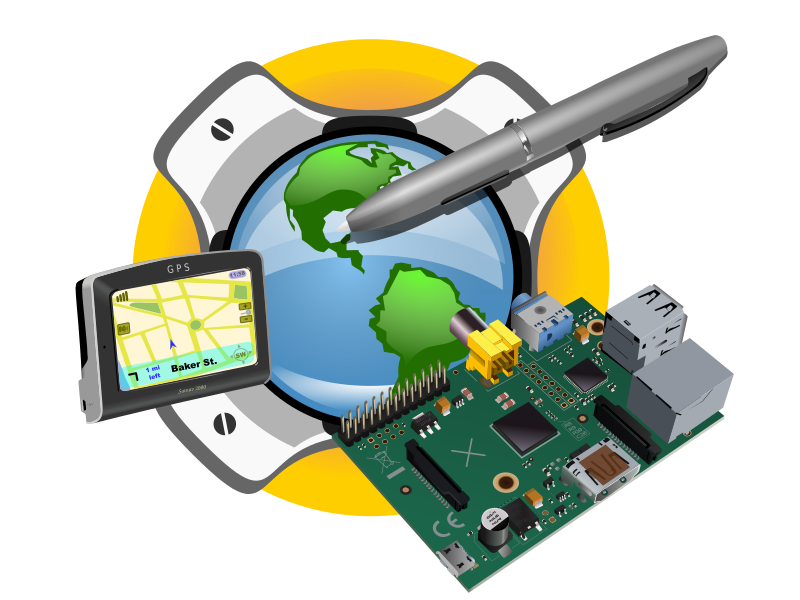
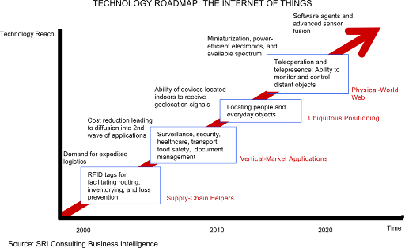

The Internet of Things (IoT) is the network of physical objects or "things" embedded with electronics, software, sensors and connectivity to enable it to achieve greater value and service by exchanging data with the manufacturer, operator and/or other connected devices. Each thing is uniquely identifiable through its embedded computing system but is able to interoperate within the existing Internet infrastructure.
The term “Internet of Things” was first documented by a British visionary, Kevin Ashton, in 1999.[1] Typically, IoT is expected to offer advanced connectivity of devices, systems, and services that goes beyond machine-to-machine communications (M2M) and covers a variety of protocols, domains, and applications.[2] The interconnection of these embedded devices (including smart objects), is expected to usher in automation in nearly all fields, while also enabling advanced applications like a Smart Grid.[3]
Things, in the IoT, can refer to a wide variety of devices such as heart monitoring implants, biochip transponders on farm animals, electric clams in coastal waters,[4] automobiles with built-in sensors, or field operation devices that assist fire-fighters in search and rescue.[5] These devices collect useful data with the help of various existing technologies and then autonomously flow the data between other devices.[6] Current market examples include smart thermostat systems and washer/dryers that utilize Wi-Fi for remote monitoring.
Besides the plethora of new application areas for Internet connected automation to expand into, IoT is also expected to generate large amounts of data from diverse locations that is aggregated very quickly, thereby increasing the need to better index, store and process such data.
History
As of 2014, the vision of the Internet of Things has evolved due to a convergence of multiple technologies, ranging from wireless communication to the Internet and from embedded systems to micro-electromechanical systems (MEMS).[5] This means that the traditional fields of embedded systems, wireless sensor networks, control systems, automation (including home and building automation), and others all contribute to enabling the Internet of Things (IoT).
The concept of a network of smart devices was discussed as early as 1982, with a modified Coke machine at Carnegie Mellon University becoming the first internet-connected appliance,[9] able to report its inventory and whether newly loaded drinks were cold.[10] Mark Weiser's seminal 1991 paper on ubiquitous computing, "The Computer of the 21st Century", as well as academic venues such as UbiComp and PerCom produced the contemporary vision of IoT.[6][11] In 1994 Reza Raji described the concept in IEEE Spectrum as "[moving] small packets of data to a large set of nodes, so as to integrate and automate everything from home appliances to entire factories".[12] Between 1993 and 1996 several companies proposed solutions like Microsoft's at Work or Novell's NEST. However, only in 1999 did the field start gathering momentum. Bill Joy envisioned Device to Device (D2D) communication as part of his "Six Webs" framework, presented at the World Economic Forum at Davos in 1999.[13]
The concept of the Internet of Things first became popular in 1999, through the Auto-ID Center at MIT and related market-analysis publications.[14] Radio-frequency identification (RFID) was seen[by whom?] as a prerequisite for the Internet of Things in the early days[when?]. If all objects and people in daily life were equipped with identifiers, computers could manage and inventory them. Besides using RFID, the tagging of things may be achieved through such technologies as near field communication, barcodes, QR codes and digital watermarking.[17][18]
In its original interpretation,[when?] one of the first consequences of implementing the Internet of Things by equipping all objects in the world with minuscule identifying devices or machine-readable identifiers would be to transform daily life.[19][20] For instance, instant and ceaseless inventory control would become ubiquitous.[20] A person's ability to interact with objects could be altered remotely based on immediate or present needs, in accordance with existing end-user agreements.[15] For example, such technology could grant motion-picture publishers much more control over end-user private devices by enforcing remotely copyright restrictions and digital restrictions management, so the ability of a customer who bought a Blu-ray disc to watch the movie becomes dependent on so-called "copyright holder's" decision, similar to Circuit City's failed DIVX.
Trends and characteristics
Intelligence
Ambient intelligence and autonomous control are not part of the original concept of the Internet of Things. Ambient intelligence and autonomous control do not necessarily require Internet structures, either. However, there is a shift in research to integrate the concepts of the Internet of Things and autonomous control, [66] with initial outcomes towards this direction considering objects as the driving force for autonomous IoT.[67][68] In the future the Internet of Things may be a non-deterministic and open network in which auto-organized or intelligent entities (Web services, SOA components), virtual objects (avatars) will be interoperable and able to act independently (pursuing their own objectives or shared ones) depending on the context, circumstances or environments. Autonomous behavior through collecting and reasoning context information plays a significant role in IoT. Modern IoT products and solutions in the marketplace use variety of different technologies to support such context-aware automation.
Embedded intelligence[70] presents an "AI-oriented" perspective of Internet of Things, which can be more clearly defined as: leveraging the capacity to collect and analyze the digital traces left by people when interacting with widely deployed smart things to discover the knowledge about human life, environment interaction, as well as social inter connection and related behaviors.
Architecture
The system will likely be an example of event-driven architecture,[71] bottom-up made (based on the context of processes and operations, in real-time) and will consider any subsidiary level. Therefore, model driven and functional approaches will coexist with new ones able to treat exceptions and unusual evolution of processes (Multi-agent systems, B-ADSc, etc.).
In an Internet of Things, the meaning of an event will not necessarily be based on a deterministic or syntactic model but would instead be based on the context of the event itself: this will also be a semantic web.[72] Consequently, it will not necessarily need common standards that would not be able to address every context or use: some actors (services, components, avatars) will accordingly be self-referenced and, if ever needed, adaptive to existing common standards (predicting everything would be no more than defining a "global finality" for everything that is just not possible with any of the current top-down approaches and standardizations). Some researchers argue that sensor networks are the most essential components of the Internet of Things.